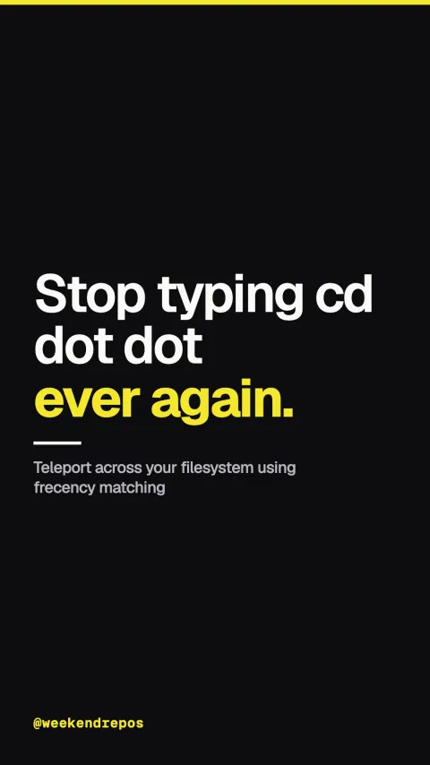

zoxide
Teleport across your filesystem using frecency matching
★ 24.1k

Stop typing cd dot dot ever again.
Replace long relative paths with single-keyword jumps.
First, stop typing long relative paths. With Zoxide installed, you just type z and a keyword from your target folder name.
Smart fuzzy directory jumping
Teleport to matching folders across your terminal.
Second, it instantly matches the highest-ranked directory and jumps there, or opens an interactive fuzzy menu.
Interactive selection via zi & fzf
Frecency algorithm ranks frequency and recency.
Third, Zoxide uses a frecency scoring algorithm, perfectly balancing how often you visit a folder against how recently you opened it.
Frecency ranking · zero manual bookmarks
Open source Rust binary with zero dependencies.
It is written in Rust, runs across Bash, Zsh, and Fish, and has over twenty-four thousand stars on GitHub.
github.com/ajeetdsouza/zoxide · MIT License